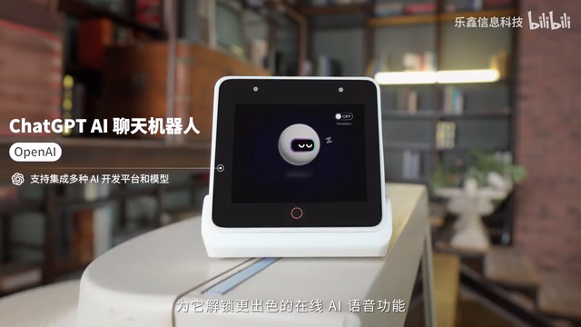
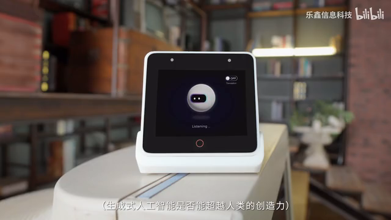
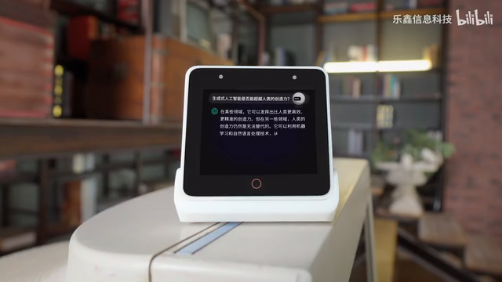

BOX-3 计划中的官方视觉参考
2026-10-21 · 用户首选：官方演示 00:53–00:55 的小球机器人。资料、原图和源代码已保存在 esp-box3 项目。
来源是乐鑫官方 chatgpt_demo（LVGL / SquareLine Studio），与旧 factory_demo 麦克风柱条、Emote 双眼、小智默认 PNG 分别记录。后端继续使用 EZ；本页保留官方参考效果，固件实现及验收状态以项目技术计划和部署记录为准。
用户选定的 53–55 秒效果
完整原视频保持原样；按钮从所选位置播放。截图直接取原帧，未重画或提升分辨率。
乐鑫信息科技官方视频 · 约 56 秒可看到文字回复面板。
计划正文已包含以下原始截图

待机／起伏参考 · 00:48源码：Sleep 面板，球体起伏和 Z 提示；不等于硬件休眠。

聆听 · 00:53用户首选风格；有眨眼和眼屏移动。
眼睛形态变化 · 00:54.5同一段原视频的另一帧。

问题＋回复正文 · 00:56.5隐藏大动画，右上保留小机器人静态图，播音时滚动正文。
三屏顺序与实施优先级
| 顺序 | 页面／工作 | 边界 |
|---|
| 第 1 屏 | 机器人动画与对白 | 按待机→聆听→处理→回复切换，继续接 EZ |
| 第 2 屏 | 传感器 | 保留位置，采集等待 SENSOR 启动 |
| 最后一屏 | Media Player | 音量入口优先；以后新功能插在它之前 |
近期：触摸＋音量 → 动画/状态与按键 → 双向对白。后续储备：红外、温湿度/雷达、SD、电池/低功耗、GPIO/PMOD 与设备控制、离线命令、Matter/Home Assistant/RainMaker、USB 音频、自有升级/恢复。
原厂媒体页功能参考
 Media Player来自另一套 factory_demo：播放／暂停、切歌、音量加减与音量条。
Media Player来自另一套 factory_demo：播放／暂停、切歌、音量加减与音量条。